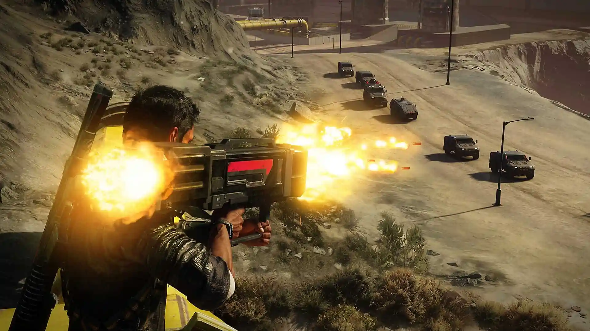
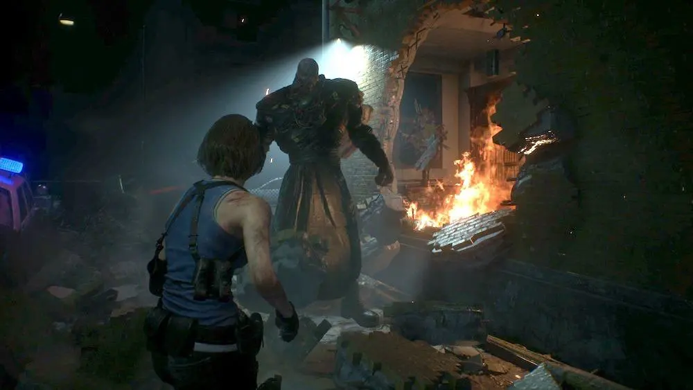
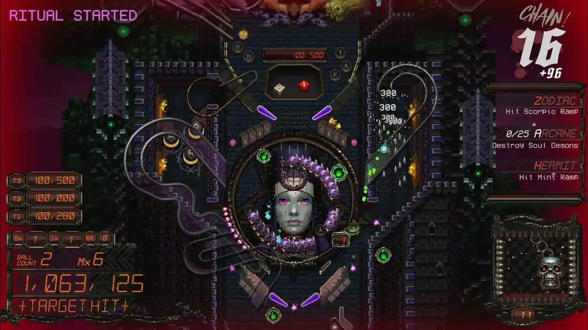

ពី PS4 ទៅ PC Gaming: Gaming Overload

ដោយ៖ Carlos Ovalleចេញផ្សាយ៖ ២០ មេសា ២០២០នៅ ម៉ោង 12:52 រសៀល
ត្រលប់ទៅខែធ្នូវិញ ខ្ញុំបានសរសេរលក្ខណៈពិសេសមួយអំពីបទពិសោធន៍របស់ខ្ញុំពី PS4 ទៅកុំព្យូទ័រ។ អ្នកអាចអានអំពីវា នៅទីនេះ ។ 4 ខែក្រោយមក នេះជាកន្លែងដែលខ្ញុំឈរ។
អ្វីដែលខុសគ្នាប៉ុន្មានខែខ្លីធ្វើឱ្យ។ ប្រហែល 4 ខែមុន ខ្ញុំបានទិញកុំព្យូទ័រសម្រាប់លេងហ្គេម ហើយបានចូលទៅក្នុងពិភពវីដេអូហ្គេមផ្សេង។ ហើយជាមួយនោះ ពិភពលោកក៏បានផ្លាស់ប្តូរផងដែរ។ ជំងឺរាតត្បាត COVID-19 បានបំផ្លាញប្រទេសនានាដែលមិនអាចគ្រប់គ្រងបានក្នុងកម្រិតដែលមិនធ្លាប់មានពីមុនមក។ យើងនៅទីនេះនៅ The Game Fanatics សង្ឃឹមថាអ្នកទាំងអស់គ្នាមានសុវត្ថិភាព។
ការផ្សងព្រេងហ្គេមកុំព្យូទ័ររបស់ខ្ញុំបានដំណើរការយ៉ាងរលូនក្នុងរយៈពេល 4 ខែចុងក្រោយនេះ ហើយបានធ្វើឱ្យខ្ញុំដឹងថាខ្ញុំត្រៀមខ្លួនរួចរាល់ហើយសម្រាប់កុងសូលជំនាន់ក្រោយ។ វាធ្វើឱ្យខ្ញុំដឹងថា PS4 មានភាពយឺតយ៉ាវយ៉ាងណានៅចំណុចនេះ។ ចាប់ពីការបើកដំណើរការហ្គេមរហូតដល់ការផ្ទុកពីហ្គេមមួយទៅហ្គេមបន្ទាប់ ខ្ញុំមិនយល់ថាមានភាពខុសប្លែកគ្នាច្រើននោះទេ។ សូម្បីតែការដំឡើងហ្គេមក៏មានល្បឿនលឿនគួរឱ្យកត់សម្គាល់នៅលើកុំព្យូទ័ររបស់ខ្ញុំដោយសារ SSD ។ វាធ្វើឱ្យខ្ញុំងឿងឆ្ងល់ថា ហេតុអ្វីបានជាខ្ញុំចំណាយពេលយូរយ៉ាងនេះដើម្បីឈានដល់វគ្គបន្ត?
និយាយឱ្យត្រង់ទៅ ខ្ញុំមិនដឹងថាហេតុអ្វីទេ។ ខ្ញុំតែងតែកោតសរសើរការលេងហ្គេមកុំព្យូទ័រ ប៉ុន្តែត្រូវបានបំភិតបំភ័យខ្លាំងចំពោះការរំពឹងទុកនៃការសាងសង់ម៉ាស៊ីនផ្ទាល់ខ្លួនរបស់ខ្ញុំ។ ការរំពឹងទុកដែលខ្ញុំនៅតែមានបំណងចង់ក្លាយជាការពិតនៅថ្ងៃណាមួយ ទោះបីជាខ្ញុំមានការភ័យព្រួយក្នុងការគ្រប់គ្រងផ្នែកដ៏មានតម្លៃរបស់កុំព្យូទ័រក៏ដោយ។ តើវាជារឿងធម្មតាទេដែលមានដៃ spaghetti ពេលបើកកុំព្យូទ័រ ឬនោះគ្រាន់តែជាខ្ញុំ? នៅពេលដែលខ្ញុំបានដំឡើង NVMe SSD នៅខាងក្នុងកុំព្យូទ័រយួរដៃរបស់ខ្ញុំ ខ្ញុំមានការភ័យខ្លាចថាខ្ញុំបាត់បង់វីស ឬប្រហែលជាដាក់ drive មិនត្រឹមត្រូវ។ ដូចជានិយាយមិនបានល្អ ខ្ញុំទើបតែចំណាយលុយមួយកាក់ស្អាតលើកុំព្យូទ័រយួរដៃ ហើយប្រហែលជាមានការការពារហួសហេតុ។ ទោះយ៉ាងណាក៏ដោយ វាគឺជាបទពិសោធន៍ដ៏មានអំណាចមួយក្នុងការធ្វើឱ្យប្រសើរឡើងដោយខ្លួនឯង ហើយខ្ញុំទន្ទឹងរង់ចាំបើកវាម្តងទៀត និងបន្ថែមបន្ទះចៀមមួយទៀត។ បានផ្តល់ថាខ្ញុំមិនដួលក្នុងអំឡុងពេលវា។ YouTube គឺជាមិត្តរបស់អ្នកនៅពេលដែលវាមកដល់រឿងនេះ។

ខ្ញុំរំភើបចិត្តនៅពេលដែលបានដំឡើង SSD ដើម្បីសាកល្បងហ្គេមថ្មីៗមួយចំនួន។ សម្រាប់ឯកសារយោង នេះគឺជា SSD ដែលខ្ញុំបានទិញ។ មកពី PS4 ខ្ញុំរំពឹងថានឹងមានហ្គេមឥតគិតថ្លៃមួយចំនួននៅទីនេះ និងទីនោះ ប៉ុន្តែខ្ញុំមិនបានរំពឹងច្រើននោះទេ។ ខ្ញុំមិនបានត្រៀមខ្លួនដើម្បីត្រូវបានបំផ្ទុះយ៉ាងខ្លាំងជាមួយនឹងការប្រកួតជាច្រើននេះ. រវាង Epic Games Store, Humble Bundle និង Steam sales ខ្ញុំមិនដឹងថាត្រូវធ្វើអ្វីជាមួយហ្គេមទាំងអស់នេះទេ។ តើខ្ញុំគួរតែតម្រង់ជួរពួកគេនៅក្នុងបន្ទប់ពានរង្វាន់និម្មិត ហើយសរសើរពួកគេទេ? លុបពួកវាចោលរាល់ថ្ងៃសុក្រ? ក្នុងរយៈពេល 4 ខែចុងក្រោយនេះ បណ្ណាល័យ Steam របស់ខ្ញុំបានលោតពីហ្គេម 1 ដល់ 50 ។ បណ្ណាល័យ Epic Games Store របស់ខ្ញុំកំពុងអង្គុយនៅហ្គេមចំនួន 28 ។ ទោះបីជាខ្ញុំសរសេរវាឥឡូវនេះក៏ដោយ ខ្ញុំទើបតែទទួលបានការជូនដំណឹងឱ្យទាញយក Just Cause 4 និងហ្គេមមួយចំនួនដែលមានឈ្មោះថា Wheels of Aurelia. ដូច្នេះតាមធម្មជាតិ ខ្ញុំគ្រាន់តែបន្ថែមវាទៅក្នុងបណ្ណាល័យដែលខ្ជិលរបស់ខ្ញុំ។ តើមានអ្វីកំពុងកើតឡើងនៅទីនេះ?
ខ្ញុំត្រូវផ្អាកការជាវ Humble Bundle របស់ខ្ញុំ ទើបខ្ញុំអាចដកដង្ហើមបាន។ អូ ហើយខ្ញុំបានទិញ Resident Evil 3 កាលពីសប្តាហ៍មុនព្រោះវាមានតម្លៃ $44.99 ដែលជាហ្គេមដែលខ្ញុំមិនដឹងថាពេលណាខ្ញុំនឹងទៅដល់វានោះទេ។ តើនេះជារឿងធម្មតាទេ? តើខ្ញុំគួរស្វែងរកអ្នកព្យាបាលទេ? ខ្ញុំមិនបានត្រៀមខ្លួនសម្រាប់រឿងនេះច្រើនទេ ហើយក្នុងវិធីដែលឆ្កួតៗ ខ្ញុំពិតជារីករាយនឹងវា។ ភ្ជាប់អ្វីៗទាំងអស់ជាមួយ Xbox Game Pass (នៅពេលវាដំណើរការ) និងសូម្បីតែ UPlay ប្រគល់ Assassin's Creed II នាពេលថ្មីៗនេះ ហើយអ្នកមានហ្គេមដ៏ច្រើនលើសលប់ដែលនឹងចំណាយពេលច្រើនឆ្នាំដើម្បីបញ្ចប់។ មានភាពជាម្ចាស់ពិតប្រាកដនៅពេលនិយាយអំពីហ្គេមនៅលើកុំព្យូទ័រ។ ខ្ញុំមានអារម្មណ៍ថាខ្ញុំពិតជាជាម្ចាស់កម្មសិទ្ធទាំងនេះ ហើយគ្មានសេវាកម្មណាមួយអាចបដិសេធខ្ញុំពីវាឡើងវិញបានទេ។ ប្រាកដណាស់ ខ្ញុំប្រហែលជាមិនដែលលេង Steep ឬ Farming Simulator 19 ទេ ប៉ុន្តែសម្រាប់ហេតុផលមួយចំនួន ខ្ញុំរីករាយដែលខ្ញុំមានពួកគេ។ ប្រហែលជាបងស្រីរបស់ខ្ញុំនឹងលេងពិតប្រាកដទាំងស្រុង Battle Simulator នៅថ្ងៃណាមួយ។ វាតែងតែមានហេតុផលដើម្បីឱ្យមានហ្គេមទាំងនេះ។
ប៉ុន្តែ Carlos អ្នកអាចសួរថា តើអ្នកកំពុងលេងអ្វីឥឡូវនេះ? ទោះបីជាមានការចូលប្រើហ្គេមដ៏អស្ចារ្យនេះក្នុងតម្លៃមិនគិតថ្លៃ ឬទាបក៏ដោយ ក៏ខ្ញុំឃើញខ្លួនឯងកំពុងលេង Demon's Tilt ស្ទើរតែគ្រប់ពេលវេលា។ ហ្គេមដែលនៅសល់គឺដូចជាកងទ័ពបម្រុង រង់ចាំទៅប្រយុទ្ធនៅពេលបន្តិច។ តើខ្ញុំនឹងដាក់ពង្រាយពួកវានៅពេលណាមួយឆាប់ៗទេ? ប្រហែលជាមិនមែនទេ ភាពលំអៀងរបស់ Demon គឺល្អពេកហើយ។

តើអ្នកខ្លះអាចទប់ទល់នឹងហ្គេមដែលមានទាំងអស់នេះដោយរបៀបណា? តើអ្នកព្យាយាមទៅរកពួកគេទាំងអស់គ្នាទេ? តើការថយចុះកុំព្យូទ័ររបស់អ្នកមានទំហំប៉ុនណា? ចែករំលែកគំនិតរបស់អ្នកខាងក្រោម ខណៈពេលដែលខ្ញុំរុករកបណ្តុំនៃហ្គេមដែលមិនបានដំឡើងនេះ។
Our Teams

Deja Kirk
Deja manages our social media, and can be found on our streams! Bonus: Her cosplay work is legit.
I'm Playing: Overwatch. 😬
Socail media »

Carlos Ovalle
If he's not writing about video games, Carlos is likely drinking an ice cold beer.
I'm Playing: One of the many PlayStation exclusives. 😏
Socail media »

Kika Anazia
Grab a mug - not a cheap Target one, but one of those Moscow Mule joints. Fill it with Hip Hop, comics. That's Kika.
I'm Playing: Nothing atm.
Socail media »